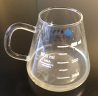
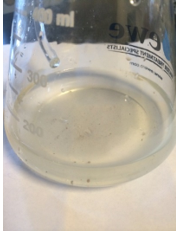
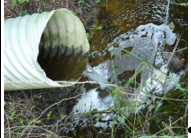
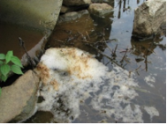

Periodic Stormwater Sampling
Purpose and Application
Purpose
The purpose of this work instruction is to define the procedure for periodic sampling of stormwater after a storm event.
Application
This work instruction applies to all Space employees and all operations, including manufacturing facilities, technical centers, offices, and administrative buildings where stormwater runoff may come in contact with industrial pollution.
Safety
 |
 |
 |
|
 |
Instructions
- Before starting the work instruction activity, perform the following steps:
- Do not begin these tasks without confirmation that personnel directly involved have completed the required training associated with the work instruction activity and have reviewed this document.
- Gather necessary tools and equipment as identified below in the Equipment Section.
- Wear and use additional Personal Protective Equipment (PPE) and safety equipment required for this specific work instruction.
- Obey all applicable safety requirements and procedures.
- Notify appropriate personnel of the activity and estimated time needed to complete the tasks.
- Clearly identify, mark off, and secure the designated area defined by the work instruction activity.
- Follow all Lockout/Tagout procedures when work instruction activity requires isolating energy in the designated area. Verify energy is isolated before starting work.
- Only after energy is verified to be isolated, can the protective guarding be removed and safety interlock gates be opened.
- To properly sample stormwater, perform the following steps:
- Obtain a copy of EHS-02-131-F002 Periodic Stormwater Sampling.

- Collect sample as soon as possible, or as local legislation directs, from a measurable storm event.
- Use a pick or hook to open the manhole at appropriate Outfall(s)
- Attach the sampling container to the pole.
- Collect sample in clean, clear glass or plastic container.
- Use a pole to safely sample from above ground.
CAUTION: DO NOT ENTER THE MANHOLE.
- Place the opening of the collection container upstream so that the flow enters the container directly.
- Avoid touching the sides or bottom of the manhole or pipes with the collection
container to prevent contamination.

- Examine in a well-lit area.
- Use a sheet of white paper beneath the sample for more accurate observation. 

- Use a sheet of white paper beneath the sample for more accurate observation.
- Maintain the sample on-site.
- Obtain a copy of EHS-02-131-F002 Periodic Stormwater Sampling.
- To identify indicators of stormwater pollution, perform the following steps:
- Observe the color
- Color may indicate inappropriate discharges, especially from industrial sources. Industrial discharges may be any color.
- Dark colors, such as brown, gray, or black, are most common.
- Contamination from industrial areas may come from process waters (slug or continuous discharges); from equipment and work area wash water discharged to floor drains; or from spills washed into storm drains.
- Check for odor.
- Discharge odors can vary widely. Some may indicate the source of contamination.
- Industrial discharges may smell like a particular spoiled product, oil, gasoline, a specific chemical, or a solvent.
- For example, the decomposition of organic wastes in a discharge will release sulfide compounds, creating an intense smell of rotten eggs.
- Significant sanitary wastewater contributions will also cause pronounced and distinctive odors.
- Check Clarity (turbidity)
- Clarity is often affected by the degree of gross contamination.
- Industrial flows can be cloudy (moderate) or opaque (high).
- Undiluted industrial discharges, such as those coming from continual flow sources or intermittent spills, are often highly turbid.
- Sanitary wastewater is also often cloudy in nature.

- Check for floating solids
- A contaminated flow may also contain floatable solids or liquids.
- Identifying floatables can aid in finding the source of the contamination, because these substances are usually direct products or byproducts of the manufacturing process or the sanitary system.
- Examples of floatables of industrial origin are oils, solvents, sawdust, foams, packing materials, and fuel.
- Check for suspended and settled solids
- Suspended solids describe particulates of varied origin, including soils, metals, organic materials and debris that are suspended in a body of water.
- Turbulence keeps the particulates suspended in water allowing the solids to be transported downstream. For this reason, suspended solids may become settled solids in the sample.
- Check for foam
- Soaps and detergents usually contain substances called brighteners, which help the detergent keep a bright white color and prevent staining.
- Soap-formed foam will retain its bright white color for many days regardless of the color or clarity of the water.
- Soaps are more efficient surfactants so they can create larger bubbles, so bubbles in soapy foams often are large and of variable size.
- Soapy foams are able to disperse easily, so they often spread out from their source.
- Natural foams are formed by organics that rapidly biodegrade and usually begin to turn brown within hours of being formed.
- Natural foams cannot create large bubbles easily, so they tend to have small bubbles that are more uniform in size.
- Natural foams do not disperse as well, so they tend to stay close to the source. 

- Check for oil sheen.
- Ensure the sheen identified is oil-based and not biological.
- Biological sheens tend to be silver, dull in color and if disturbed will break into small pieces and not reform.
- Petroleum sheens are typically shiny, rainbow colored, and will float back
together if disturbed.
Figure 6. Biological oil sheen 
Figure 7. Petroleum sheen at a storm drain 
- Observe the color
- To properly document, perform the following steps:
- Specify the location where the sample was collected.
- Date and time of sample collection and examination.
- Rainfall/snowmelt amount, storm event duration, time since the last storm event, start time of discharge.
- Personnel is collecting the sample and performing a visual assessment and their signatures.
- Nature of the discharge (runoff source).
- Rainfall or snowmelt?
- Results of observations (parameters).
- Probable sources of any observed stormwater contamination.
- Upon completion of tasks, perform the following steps:
- Replace protective guarding and close safety interlock gates.
- Confirm the designated work area is clear and communicate to personnel the intent to restart energy.
- After the designated work area is confirmed clear and personnel are aware of the pending restart, follow all Lockout/Tagout procedures to restart energy supplied to the designated area. Verify energy is active.
- Remove signs and markings from the designated work area.
- Perform basic housekeeping duties. Clean up the work space, tools and equipment. Dispose of trash. Put tools and equipment in assigned area.
- Notify appropriate personnel that the work instruction activity has been completed.
- Record and report findings and results.
- Follow appropriate instructions for notification of findings and results relating to specifications, targets and/or reaction limits.
Required Training
Before performing this work instruction, applicable personnel must be trained by an authorized trainer on the required training contents listed in this document.
Equipment
Clean, clear glass or plastic container
PPE (Nitrile gloves, safety glasses, and safety shoes)
Sampling pole
Approval
|
Region |
Representative |
|---|---|
|
Asia Pacific |
Steve Bourke |
|
Europe |
Tim Neal |
|
Latin America |
Isabela Malpighi |
|
North America |
Ken Smigielski |
|
Global Technology |
Joseph St. John |
Revision History
| 2017-08-31 |
Approved by Joseph St. John, GT EHS Manager Original Issue |